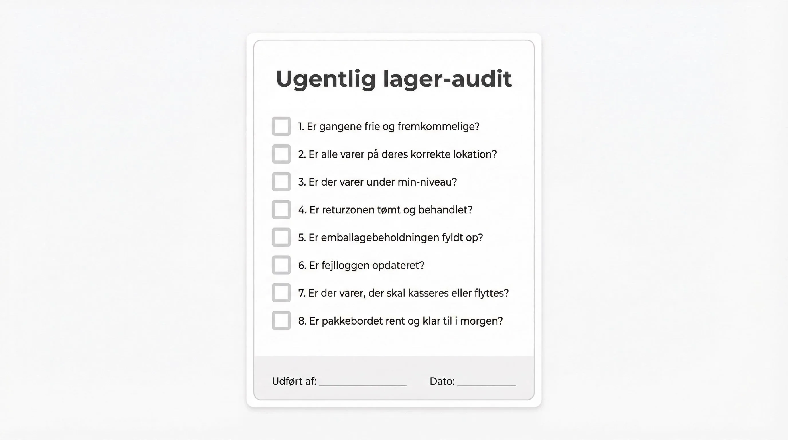

Pallen står på rampen. Ingen ved helt præcis hvad der er på den, før nogen har åbnet den og talt efter. Og alt hvad der går galt her, betaler I for et andet sted, senere, til en højere pris.
Varemodtagelsen er det billigste sted på hele lageret at fange en fejl. Det er også det sted, der oftest kører på rutine og hukommelse.
Hvorfor bagdøren er billigst
En forkert optalt leverance koster to minutter at rette, mens pallen står der. Den samme fejl opdaget af en kunde koster returfragt, en ny forsendelse, kundeservicetid og ofte selve varen.
Regn selv: en pakkefejl ligger typisk mellem 300 og 590 kr. i hårde omkostninger, og det er før man tæller den kunde der ikke kommer igen. To minutter ved rampen er billige.
Problemet er, at fejlen ikke ligner en fejl endnu. Den ligner et tal i systemet der passer. Den bliver først synlig, når plukkeren står ved en tom hylde.
👉 Vil du se hvordan modtagelsen ser ud på en håndterminal? Tal med SmartPack →
Kæden, trin for trin
Varemodtagelse er ikke én handling. Det er fem, og de fleste lagre har kun styr på to af dem.
- Købsordren. Hvad har I bestilt, hvor mange, og hvornår skulle det komme. Uden den findes der ikke noget at holde leverancen op imod, og så bliver modtagelse til gaetteri.
- Ankomsten. Pallen kommer og bliver koblet til købsordren. Nu ved systemet at der er noget på vej ind, også inden nogen har åbnet den.
- Modtagelsen. Varen scannes og tælles op mod det forventede antal. Det er her fejlen skal findes.
- Afvigelsen. Passer det ikke, skal der tages stilling med det samme, ikke i morgen.
- Placeringen. Varen får en lokation. Først her er den reelt på lager.
Springer man trin 2 over, ved ingen hvad der er på vej. Springer man trin 5 over, står varen på rampen mens webshoppen sælger den.
Noterne er det de fleste mangler
Den viden der skal bruges ved modtagelsen, sidder som regel i hovedet på én person. Den skal ligge i systemet, og der er to steder at lægge den.
Noter på købsordren popper op hos medarbejderen, når netop den leverance modtages. De gælder én gang:
- “Denne leverandør pakker 12 stk. pr. karton, ikke 10. Tæl kartoner, ikke stk.”
- “Der mangler 40 stk. fra sidste levering. Tjek om de er med her.”
- “Denne ordre skal have batchnummer på, ellers kan vi ikke spore den.”
Noter på produktet følger varen og dukker op hver gang, uanset hvilken ordre den kommer med:
- “Ligner varenummer 4471 til forveksling. Scan stregkoden, kig ikke.”
- “Kommer altid med bulet yderkarton. Tjek inderemballagen før den går på hylden.”
- “Skal stå køligt. Må ikke på reol 12.”
Forskellen er vigtig. Ordrenoten er en besked om denne leverance. Produktnoten er viden om varen, og den skal blive ved med at dukke op, også når den kollega der skrev den er holdt op.
De fire afvigelser, og hvad der skal ske
- For få. Modtag det der faktisk kom, ikke det der stod på ordren. Resten bliver stående som restordre, så indkøb kan følge op. Modtager man det fulde antal “for nemheds skyld”, sælger webshoppen varer I ikke har.
- For mange. Læg dem ind. Et skjult overskud bliver til svind i næste optælling, og så leder nogen efter en fejl der aldrig var der.
- Forkert vare. Den må ikke på hylden, heller ikke midlertidigt. Har den først en lokation, bliver den plukket.
- Beskadiget. Fotografer før der røres ved noget, og reklamér med det samme. Fristerne er korte, og efter dem vender bevisbyrden. Se hvem der betaler for fragtskader.
Modtaget er ikke det samme som på lager
Det er den skelnen der koster flest penge, og den er nem at overse.
Når varen er modtaget, ved systemet at den er i huset. Når den er placeret, ved systemet hvor. Er beholdningen sat op til at tælle fra modtagelsen, begynder webshoppen at sælge varer der stadig står på en palle ved rampen. Plukkeren går hen til en tom hylde, finder ingenting, og ordren strander.
Varen er først reelt på lager, når den står et sted nogen kan finde den.
Sådan finder I jeres eget hul
Brug en time ved rampen næste gang der kommer en leverance, og skriv ned:
- Hvor lang tid gik der fra pallen kom, til varerne stod på hylden?
- Blev der talt op mod et forventet antal, eller blev der bare talt?
- Hvem vidste noget om denne leverance, som ikke stod nogen steder?
- Hvor mange gange blev nogen nødt til at spørge en anden?
- Hvad skete der med det der ikke passede?
De fleste opdager, at den viden der skulle bruges fandtes, men lå i hovedet på den der ikke var på arbejde.
Hvad SmartPack gør ved det
Afhænger jeres varemodtagelse af hvem der har vagten, er årsagen næsten altid den samme: viden om leverancen ligger ikke noget sted, systemet kan vise den. I SmartPack kan I:
- Oprette købsordrer med forventet antal og dato, så modtagelsen har noget at måle op imod
- Lægge noter på købsordren, der popper op hos medarbejderen ved modtagelsen
- Lægge noter på enkelte produkter, der dukker op hver gang varen håndteres
- Modtage med scanner, så afvigelsen ses mens pallen stadig står der
- Styre placeringen, så varen først tæller som salgbar, når den står på en lokation
Det fjerner ikke arbejdet ved rampen. Det gør bare, at leverancen bliver håndteret ens, uanset hvem der tager imod den.